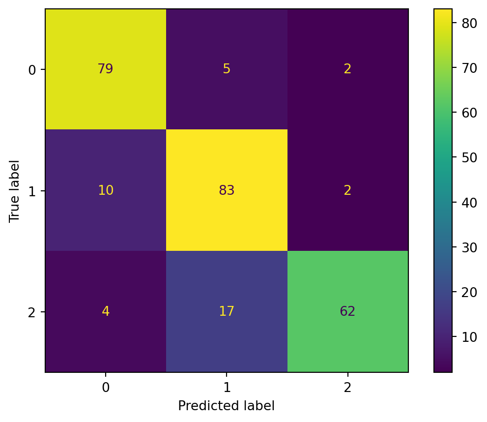

from sklearn.datasets import make_classification
X, y = make_classification(
n_features=6,
n_classes=3,
n_samples=800,
n_informative=2,
random_state=1,
n_clusters_per_class=1,
)Probability Theory and Random Variables
Probablity Theory
Probability theory is like the crystal ball of mathematics, helping us predict the likelihood of events occurring. The magic number always lies between 0 and 1, inclusive, where 0 means “impossible” and 1 means “certain.”
Basic Concepts
- Sample Space: The set of all possible outcomes of a random experiment. For example, the possible outcome of tossing a coin is {heads, tails}.
- Event: A subset of the sample space, representing a specific outcome or a combination of outcomes. For example, the event of tossing a coin is {heads}.
- Probability: Probability is a numerical measure between 0 and 1 indicating the likelihood of an event happening. A probability of 0 denotes impossibility, while a probability of 1 signifies certainty for the occurrence of the event.
Example: Picking Balls from Bags
To understand this clearly, Let’s consider a scenario involving two bags, A and B, each holding 10 red and 10 black balls.
Consider the task of randomly picking a ball without peeking into the bag. The probability (denoted as P) of selecting a red ball can be calculated as:
\(P(\text{Red ball}) = P(\text{Bag A}) \cdot P(\text{Red ball | Bag A}) + P(\text{Bag B}) \cdot P(\text{Red ball | Bag B})\)
The idea of conditional probability \((P(\frac{\text{A}}{\text{B}}))\), which calculates the probability of event A given that event B has occurred.
Let’s break it down:
- \(P(\text{Bag A}) = \frac{1}{2}\) because we have two bags, and we need to choose Bag A.
- \(P(\text{Red ball | Bag A})\) is the probability of drawing a red ball given Bag A, which is \(\frac{10}{20}\) or \(\frac{1}{2}\).
\(P(\text{Red Ball}) = \frac{1}{2} \cdot \frac{1}{2} + \frac{1}{2} \cdot \frac{1}{2} = \frac{1}{2}\)
Similarly, you can explore finding the probability of drawing a black ball or the probability of drawing two consecutive red balls after transferring one black ball from Bag A to Bag B.
Conditional Probability and Intersection
The concept of conditional probability involves finding the probability of event A given that event B has already occurred. In set theory, this is denoted as the “Intersection” symbol (∩) between A and B.
\(P(A | B) = \frac{P(A \cap B)}{P(B)}\)
Here, the numerator represents the probability of both events A and B occurring, divided by the probability of event B.
Random Variables
In probability theory, random variables play a crucial role in quantifying uncertainty associated with the outcomes of random experiments. Let’s explore the concept of random variables through a concrete example.
Example: Tossing Two Coins
Consider the classic experiment of tossing two fair coins, where each coin can land either heads (H) or tails (T). The sample space for this experiment is {HH, HT, TH, TT}.
Now, let’s define a random variable X that maps the outcomes of this sample space to real numbers:
- X(HH) = 3
- X(HT) = 1
- X(TH) = 2
- X(TT) = 0
Here, X assigns the values 3, 1, 2, and 0 to the outcomes HH, HT, TH, and TT, respectively.
Probability Analysis
Once we’ve defined a random variable, we can apply probability theory to analyze the uncertainty associated with its outcomes. For example:
- \(P(X = 1) = \frac{1}{4}\)
- \(P(0 \leq X \leq 2) = \frac{3}{4}\)
This allows us to quantify the likelihood of specific values or ranges for the random variable.
Types of Random Variables
1. Discrete Random Variable
A discrete random variable takes on a countable number of distinct values, often represented by integers or a finite set of values. Examples include:
- The number of heads obtained when flipping a coin.
- The number of cars passing through a toll booth in an hour.
- The outcome of rolling a six-sided die.
2. Continuous Random Variable
In contrast, a continuous random variable can take on any value within a specified range or interval, typically represented by real numbers. Examples include:
- The height of a person.
- The time it takes for a car to travel a certain distance.
- Temperature recorded at a specific time.
Probability Distribution
Probability distribution refers to a mathematical function or model that describes the likelihood of different outcomes or events occurring. It provides a systematic way to assign probabilities to various possible outcomes, allowing us to understand the relative likelihood of each outcome.
In simpler terms, a probability distribution provides a complete summary of the probabilities of all possible values that the random variable can take.
Dice Example
In the dice example, the probability distribution of (X) is a uniform distribution, as all outcomes have equal probabilities. It can be represented as follows:
| X | P(X) |
|---|---|
| 1 | 1/6 |
| 2 | 1/6 |
| 3 | 1/6 |
| 4 | 1/6 |
| 5 | 1/6 |
| 6 | 1/6 |
You might think that the distribution should be represented graphically rather than in a tabular format. While this is true for larger or continuous datasets, the tabular format is suitable for a small number of outcomes.
Probability Distribution Function
The probability distribution function for a discrete random variable is known as the Probability Mass Function (PMF), whereas for a continuous random variable, it is known as the Probability Density Function (PDF).
Probability Mass Function (PMF)
The PMF calculation is simple and straightforward, based on the counting principle. Since discrete random variables are countable, the PMF is calculated as:
\(PMF=\frac {Random Variable Outcome}{Total outcomes in the sample space}\)
For example, when a four-sided dice is rolled twice, the probability of the sum of two rolled dice and the PMF would be:
| Sum | PMF |
|---|---|
| 2 | 1/16 |
| 3 | 2/16 |
| 4 | 3/16 |
| 5 | 4/16 |
| 6 | 3/16 |
| 7 | 2/16 |
| 8 | 1/16 |
Probability Density Function (PDF)
The PDF is used for continuous random variables. Unlike the PMF, which gives probabilities directly, the PDF represents the relative likelihood of the random variable falling within a given range or interval.
Two prime reasons for this are:
- Continuous variables have an infinite number of possible values within a range or interval (e.g., distance).
- The probability assigned to any single point is infinitesimally small or close to zero.
Hence, to find the probability of any value in a continuous random variable, we determine the probability of the variable falling within a specific range.
Introducing Naive Bayes Theorem
Now, let’s take our exploration further by introducing the Naive Bayes theorem. Naive Bayes is a powerful classification algorithm rooted in probability theory. It is particularly useful when dealing with datasets that exhibit certain dependencies between features.
Naive Bayes is a statistical classification technique based on Bayes Theorem. It is one of the simplest supervised learning algorithms. Naive Bayes classifier is the fast, accurate and reliable algorithm. Naive Bayes classifiers have high accuracy and speed on large datasets.
What is Naive Bayes Classifier?
Naive Bayes classifier assumes that the effect of a particular feature in a class is independent of other features. For example, a loan applicant is desirable or not depending on his/her income, previous loan and transaction history, age, and location. Even if these features are interdependent, these features are still considered independently. This assumption simplifies computation, and that’s why it is considered as naive. This assumption is called class conditional independence.
- P(h): the probability of hypothesis h being true (regardless of the data). This is known as the prior probability of h.
- P(D): the probability of the data (regardless of the hypothesis). This is known as the prior probability.
- P(h|D): the probability of hypothesis h given the data D. This is known as posterior probability.
- P(D|h): the probability of data d given that the hypothesis h was true. This is known as posterior probability.
Applying Naive Bayes to a Practical Example
Let’s consider an example dataset generated using make_classification from Scikit-Learn. This dataset has six features, three classes, and a total of 800 samples. We’ll visualize the dataset to get an initial understanding.
In the plot, each point represents a sample with two informative features, and colors represent different classes. This synthetic dataset will help us understand the workings of Naive Bayes.
Generating the Dataset
We will use matplotlib.pyplot’s scatter function to visualize the dataset.
import matplotlib.pyplot as plt
plt.scatter(X[:, 0], X[:, 1], c=y, marker="*");
We can see that there are three types of target labels, and we will be training a multiclass classification model.
Data Splitting and Training
We’ll split the dataset into training and testing sets and train a Gaussian Naive Bayes model using the training data.
from sklearn.model_selection import train_test_split
X_train, X_test, y_train, y_test = train_test_split(
X, y, test_size=0.33, random_state=125
)Model Building and Training
Build a generic Gaussian Naive Bayes and train it on a training dataset. After that, feed a random test sample to the model to get a predicted value.
from sklearn.naive_bayes import GaussianNB
# Build a Gaussian Classifier
model = GaussianNB()
# Model training
model.fit(X_train, y_train)
# Predict Output
predicted = model.predict([X_test[6]])
print("Actual Value:", y_test[6])
print("Predicted Value:", predicted[0])Actual Value: 0
Predicted Value: 0Model Evaluation
We will not evolve the model on an unseen test dataset. First, we will predict the values for the test dataset and use them to calculate accuracy and F1 score.
from sklearn.metrics import (
accuracy_score,
confusion_matrix,
ConfusionMatrixDisplay,
f1_score,
)
y_pred = model.predict(X_test)
accuray = accuracy_score(y_pred, y_test)
f1 = f1_score(y_pred, y_test, average="weighted")
print("Accuracy:", accuray)
print("F1 Score:", f1)Accuracy: 0.8484848484848485
F1 Score: 0.8491119695890328To visualize the Confusion matrix, we will use confusion_matrix to calculate the true positives and true negatives and ConfusionMatrixDisplay to display the confusion matrix with the labels.
labels = [0,1,2]
cm = confusion_matrix(y_test, y_pred, labels=labels)
disp = ConfusionMatrixDisplay(confusion_matrix=cm, display_labels=labels)
disp.plot();
As you can see, our model has performed well, and we can still improve this by scaling, cross-validations, preprocessing and hyperparameter optimization.
Conclusion
In this blog post, we’ve explored the basics of probability theory and random variables and the workings of Naive Bayes using a practical example. We started with dataset creation, splitting it into training and testing sets, training a Naive Bayes model, making predictions, and evaluating the model’s performance.
Naive Bayes is a powerful algorithm, particularly useful for classification tasks, and its simplicity and efficiency make it a popular choice in various machine learning applications. Feel free to experiment with different datasets and see how Naive Bayes performs in different scenarios.